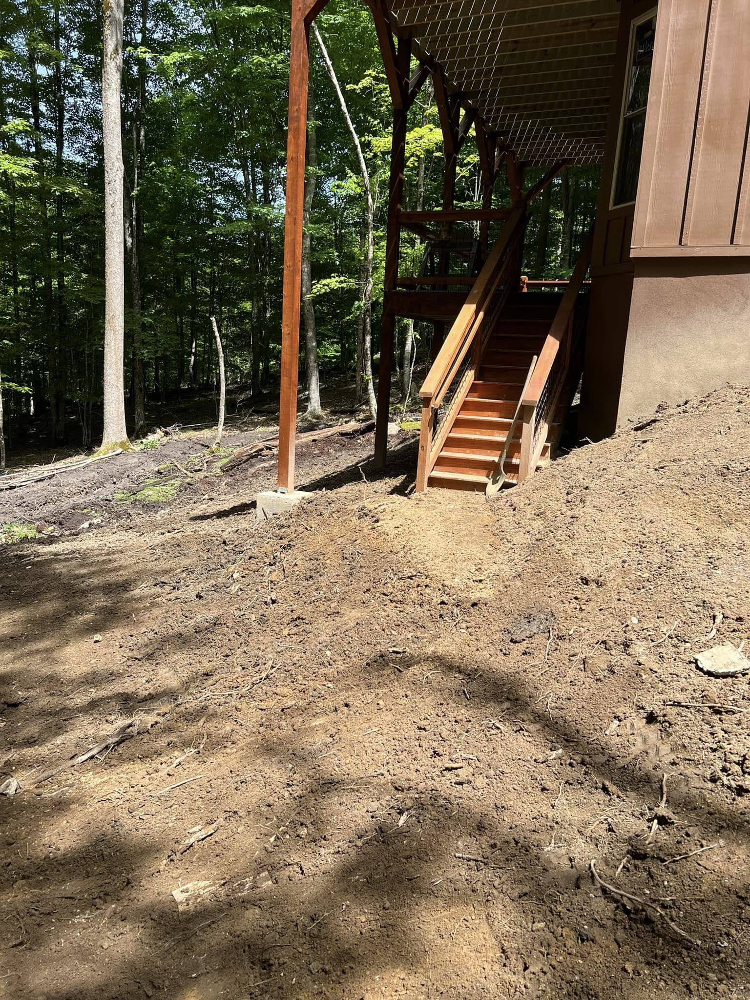
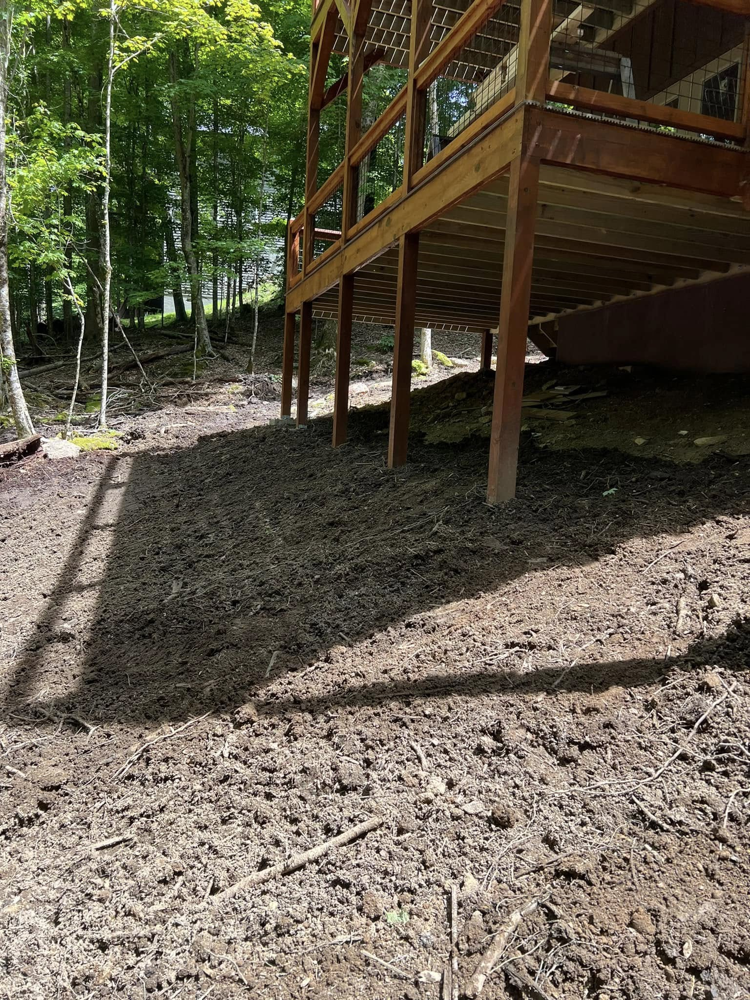
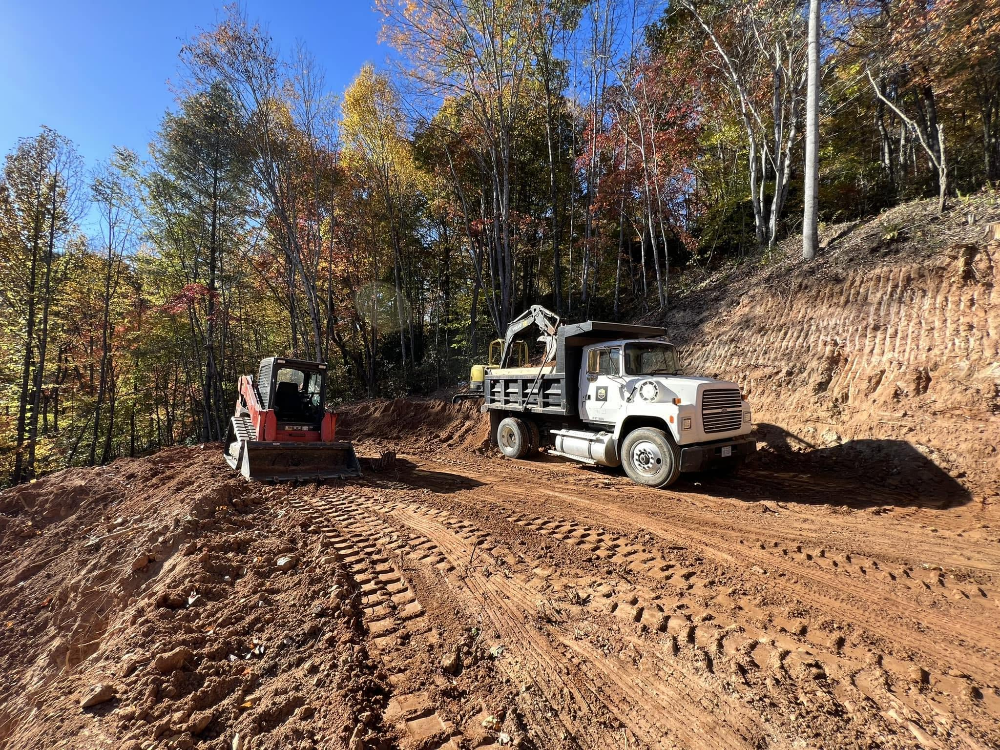
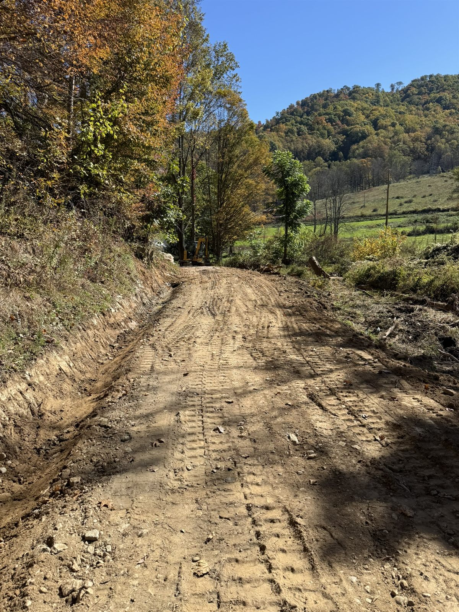
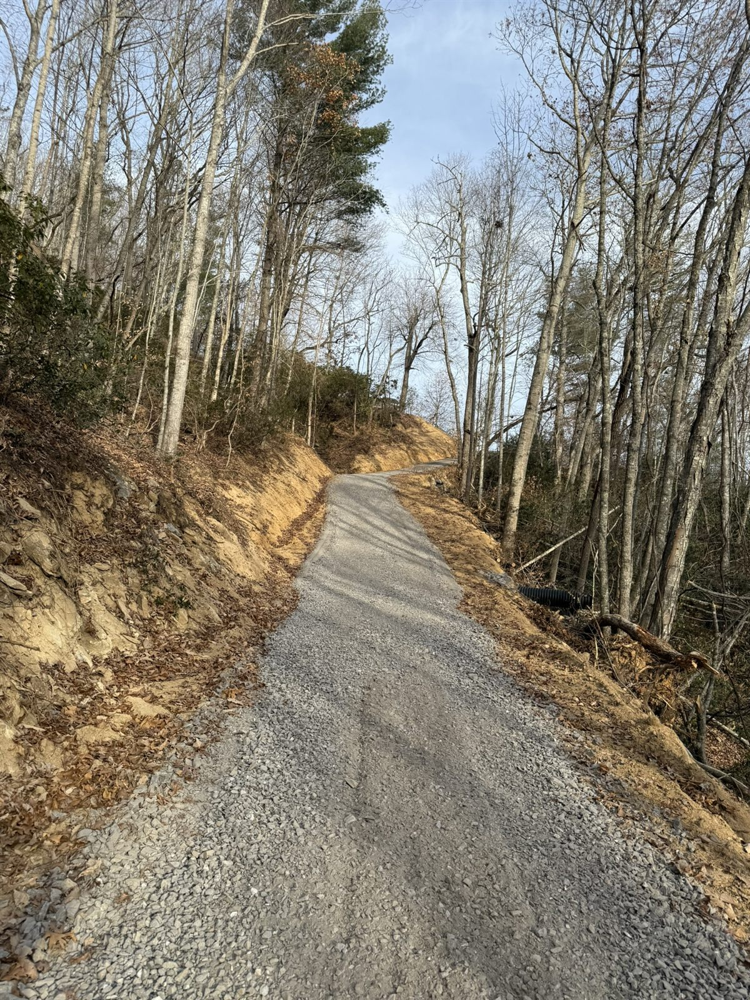
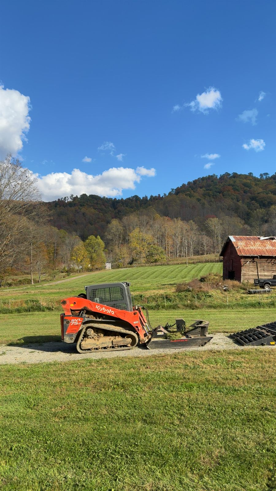
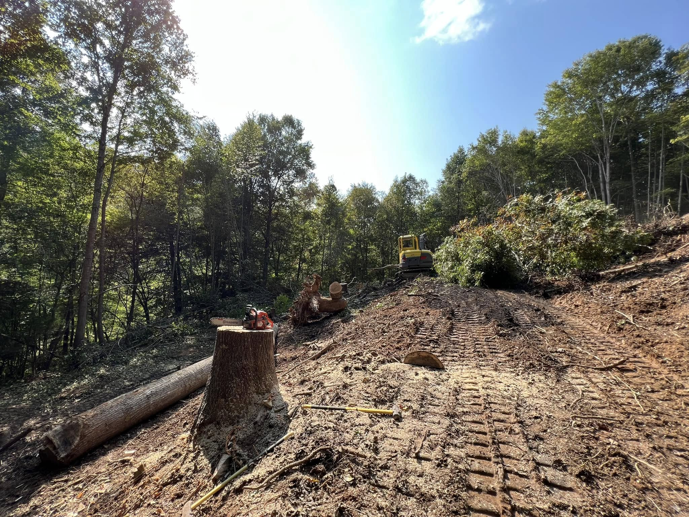
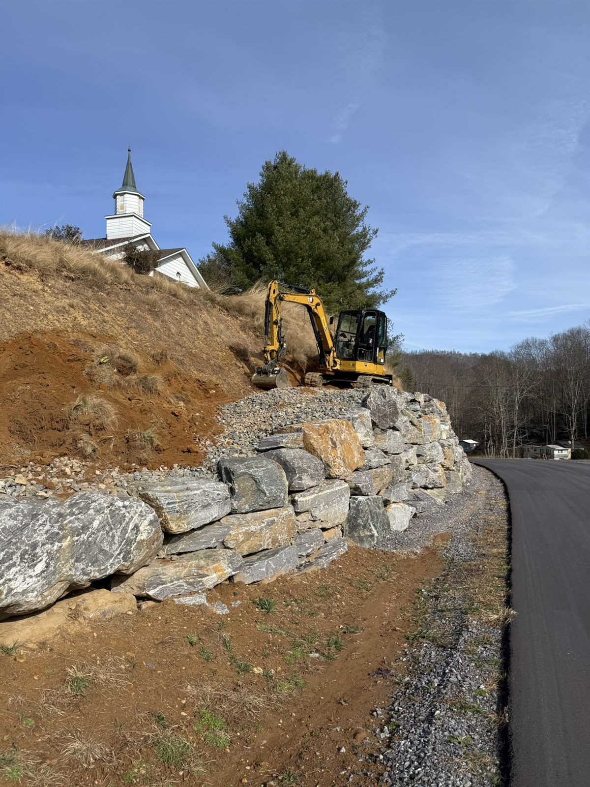
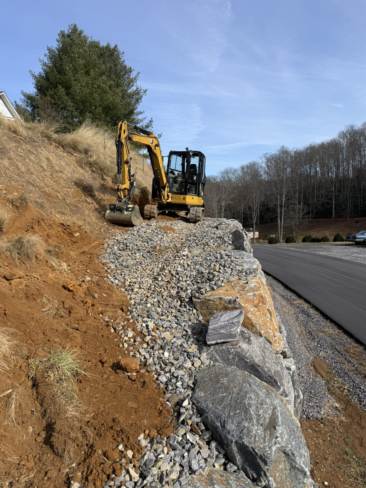
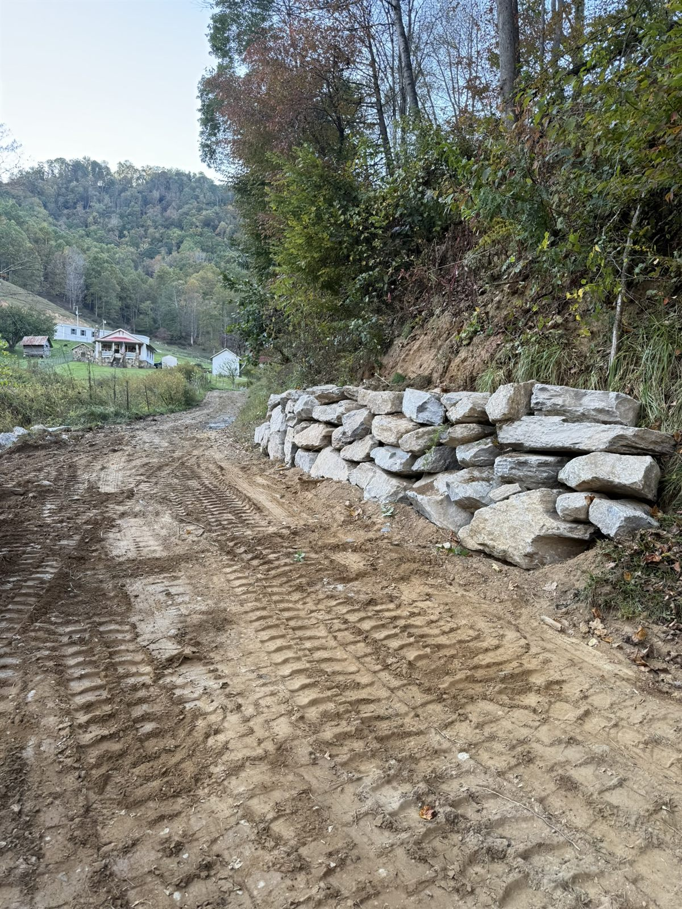

Our Work
Proof in the Dirt.
Real sites across Western North Carolina: grading and pads, drainage and pipe, clearing, and a full septic-and-drainage case study. No stock photos.
Featured Case Study
Septic, Spring Diversion & Final Grade

"Set the basin for the septic pump, covered the septic, ran the water and power ditch, and ditched to divert a small spring away from the porch, then final-graded around the house."
Site-work scope completed in partnership with a local general contracting firm.




Gallery
Recent Site Work
Grading, Pads & Roads









Drainage, Pipe & Septic


Retaining Walls & Clearing








Real Western NC job sites, photographed on the job. More added as projects wrap.
Want work like this on your site?
Tell us the scope. We'll get back fast.